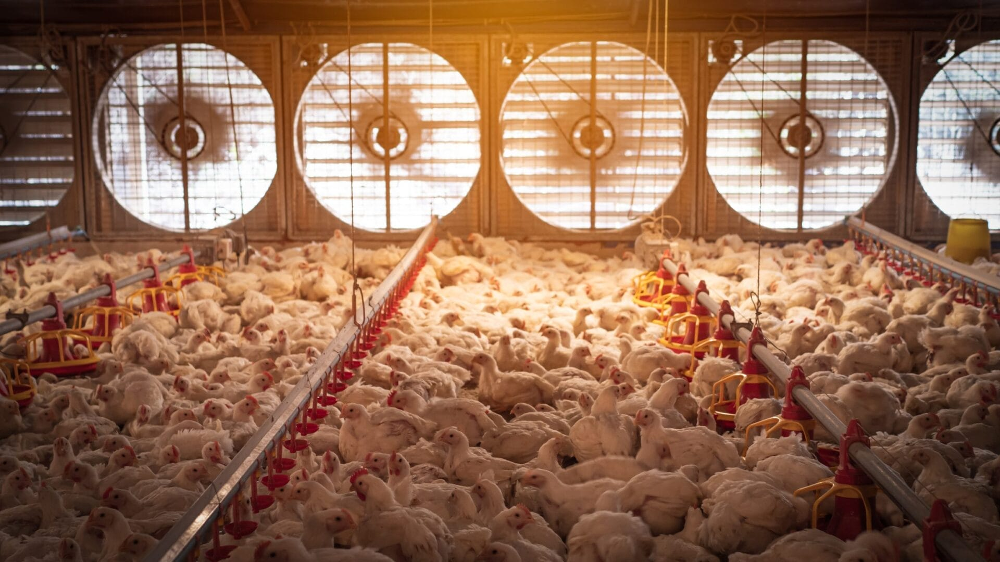

01
Farm design and construction
Farm layouts and building designs planned around animal housing, workflow, capacity, equipment and the daily activities of the farm.

C.G. OKAFOR CO. BUSINESS
We design, build, equip and automate poultry and swine farms. From farm structures to the systems that support daily operations, we make farm work easier, faster and more efficient.
Discover what we doWHO WE ARE
Okafor Farm Technology provides practical farm design, construction, equipment and automation solutions for poultry and swine farming. We believe farms should be designed around the work they need to do.
From the layout of buildings to the systems used for feeding, watering, ventilation, heating and waste management, every detail matters. Our focus is to help farmers reduce unnecessary labour, improve daily operations and make better use of their resources.
OUR AREAS OF FOCUS
We bring together farm design and construction, equipment installation and automation to support efficient farm operations.
Farm layouts and building designs planned around animal housing, workflow, capacity, equipment and the daily activities of the farm.
Practical farm equipment and installations that make feeding, watering, ventilation, heating, cleaning and other farm tasks easier to carry out.
Automated systems and controls for routine farm activities, helping reduce manual work, improve consistency and make operations easier to manage.
WHAT WE PROVIDE
A well-designed farm needs more than buildings. It needs reliable systems for maintaining the right environment, supplying feed and water, handling waste and supporting everyday farm activities.

FARM SYSTEMS AND EQUIPMENT
We provide practical systems for the key activities and conditions that keep poultry and swine farms running.
Ventilation fans, air inlets, evaporative cooling pads and environmental control systems to support proper airflow and suitable conditions inside animal housing.
Brooders, infrared heaters and heating systems for maintaining suitable temperatures during chick brooding and piglet care.
Feeders, feed pans, feed silos, augers and automated feed distribution systems to make feeding more efficient.
Nipple drinkers, bell drinkers, water tanks, pumps, filters and pipelines for reliable water supply across the farm.
Nesting systems, egg belts and collection conveyors that help simplify egg gathering and movement within layer farms.
Manure removal systems, drainage, cleaning equipment and waste-handling solutions to support cleaner farm operations.
OUR FARM OPERATIONS
Different farming operations have different requirements. We plan facilities and systems around the needs of each farm.
Farm design and systems for egg production, including housing, feeding, watering, ventilation and egg collection.
Facilities and systems for meat production, with attention to brooding, feeding, watering and environmental control.
Breeding and farrowing facilities designed for sow management, piglet care, feeding and heating systems.
Facilities for growing and finishing pigs, with efficient housing, feeding, watering and manure management.
Farm layouts and systems for integrated breeding and pig production operations.
BUILT WITH EFFICIENCY IN MIND
A well-designed farm is not just about buildings. It is about how people, animals, equipment and resources work together. We focus on practical improvements that make everyday farm operations easier.
Automate repetitive tasks and reduce unnecessary physical work so farmers and workers can use their time more effectively.
Make feeding, watering, cleaning, ventilation and other routine activities easier to carry out and manage.
Plan systems to support more efficient use of water, feed, energy, space and other farm resources.
HOW WE APPROACH FARM TECHNOLOGY
Good farm technology should solve a real problem. We consider how work is currently done, identify where time and effort are being lost, and recommend practical improvements that suit the farm's operation and needs.
Look at the farm, its facilities, animals, daily tasks and operating challenges.
Identify suitable designs, equipment and systems for the work that needs to be done.
Put practical solutions in place to make farm operations easier, more organised and more efficient.
LET'S BUILD BETTER FARMS
Planning a new poultry or swine farm? Looking to improve an existing operation? Tell us what your farm needs.
Contact Us on WhatsApp